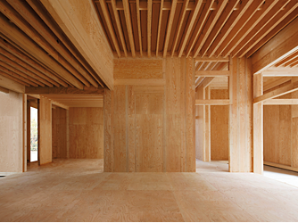

① 会社・基本データ（規模・エリア・グループ）

ミサワホームは1967年（昭和42年）に三澤千代治氏が創業した老舗ハウスメーカー。独自の「木質パネル接着工法」、1994年に業界初で開発した「蔵のある家」、そして36年連続グッドデザイン賞受賞（住宅業界唯一）という3つの大きな柱を持つ。2020年1月、トヨタ自動車×パナソニック合弁のプライムライフテクノロジーズの完全子会社となり、過去の財務不安は解消済み。
| 項目 | 内容 |
|---|---|
| 会社名 | ミサワホーム株式会社 |
| 設立 | 1967年10月（昭和42年） |
| 創業者 | 三澤千代治 |
| 本社 | 東京都新宿区西新宿二丁目4番1号 新宿NSビル |
| 資本金 | 118億92百万円（2022年4月時点） |
| 売上高（連結） | 4,831億円（2025年3月期 / 前年比12.3%増 / 4期連続増収） |
| 従業員数（連結） | 約8,105名（2024年3月時点） |
| 年間販売戸数 | 戸建て約5,349戸 / 総販売戸数約8,597戸（2024年度） |
| 対応エリア | 沖縄県を除く全国（ディーラー制） |
| 事業内容 | 注文住宅、リフォーム、まちづくり、不動産、南極建築支援 |
| 親会社 | プライムライフテクノロジーズ株式会社（トヨタ×パナソニック合弁） |
プライムライフテクノロジーズ グループ構成
| グループ会社 | 特徴 |
|---|---|
| ミサワホーム | 木質パネル接着工法・蔵のある家 |
| トヨタホーム | 鉄骨ユニット工法・トヨタ品質 |
| パナソニック ホームズ | 鉄骨・IoT連携・家電統合 |
トヨタグループ入りの経緯
- 2017年1月：トヨタホームがミサワホームを連結子会社化
- 2020年1月：トヨタ自動車×パナソニック合弁「プライムライフテクノロジーズ」が全株式を取得し完全子会社化
- 経営基盤が安定し、過去の財務不安は解消済み
一言で言うと？
「デザインと収納の先駆者」。36年連続グッドデザイン賞受賞（住宅業界唯一）、「蔵のある家」で収納革命を起こし、南極昭和基地建設の実績を持つ老舗ハウスメーカー。トヨタグループ入りで経営基盤も盤石。
② 商品ラインナップと坪単価
ミサワホームは主力の木質系注文住宅（木質パネル接着工法）と、木造軸組住宅（MJ FRAME構法）の2本柱。全商品で「蔵のある家」に対応できる。
木質系注文住宅（木質パネル接着工法）


木造軸組住宅（MJ FRAME構法）
| 商品名 | 坪単価目安（2026年） | 主な特徴 |
|---|---|---|
| MJ Wood（MJウッド） | 60〜75万円 | 10プラン。木造軸組＋パネルのハイブリッド。大開口対応「MJ FRAME構法」。在来工法の自由度と先進技術の融合 |
坪単価の目安（全体平均）
| 指標 | 金額 |
|---|---|
| 全商品平均坪単価 | 約82万円（HOME4U 2025年調査） |
| ボリュームゾーン | 72〜101万円 |
| SMART STYLE（最安帯） | 60〜72万円 |
| CENTURY（最高帯） | 80〜100万円超 |
平屋（全シリーズ対応）
ミサワホームは平屋建ての顧客満足度が高く、2026年オリコン調査 平屋カテゴリで1位。蔵を活かしたスキップフロア＋平屋は、段差ある生活空間でありながら将来のバリアフリーにも配慮できる設計が特徴。
坪単価×坪数＝本体工事費のみ。外構費・地盤改良費・オプション（蔵追加で+100〜200万円など）を含めた「総額」で予算計画を立てること。
③ 構造・耐震性能

木質パネル接着工法（モノコック構造）
ミサワホームの主力構法。1967年の創業以来、独自に進化を続ける工業化住宅技術。航空機やF1に使われるモノコック原理を住宅に応用し、外力を面全体で分散吸収する。
| 項目 | 詳細 |
|---|---|
| 工法 | 木質パネル接着工法（独自開発） |
| 接合方法 | 高分子接着剤＋スクリュー釘＋接合金物による「面接合」 |
| 構造方式 | 6面体モノコック構造（床・壁・屋根で構成するボックス型） |
| 耐震等級 | 全棟：耐震等級3（最高等級） |
| パネル精度 | 工場で精密生産。現場は「組み立て」主体で品質安定 |
制震装置「MGEO（エムジオ）」
| 項目 | 詳細 |
|---|---|
| 開発 | 2004年12月、ミサワホームと住友ゴムグループ（SRIハイブリッド）が共同開発 |
| 原理 | テコの原理で地震の力をセンターパネルが制震ダンパーに伝達 |
| ダンパー素材 | 高減衰ゴム（地震エネルギーを熱エネルギーに変換・吸収） |
| 揺れ低減 | 最大約50%低減 |
| 対応 | 木質パネル接着工法の全商品にオプション装着可（一部標準） |
| 耐久性 | メンテナンスフリー。繰り返しの地震にも性能劣化しにくい |
MJ FRAME構法（MJ Wood用）
木造軸組＋接着耐力パネルのハイブリッド工法。在来工法の設計自由度と工業化技術の強度を両立。独自のフレーム構造で大開口・大空間を実現。制震装置は「MGEO-N」をオプション装着可能。
実大振動実験と倒壊実績
- 4日間で39回の加振実験を実施（2004年7月 明治大学共同実験）
- 阪神・淡路大震災レベル（818gal）〜想定東海地震・最大2,000galレベルで構造体の損傷なし
- 創業以来、地震による倒壊・全壊ゼロ
- 熊本地震（震度7が2回＋余震4,000回以上）でも全棟で倒壊・全壊ゼロ
④ 断熱性能
スマートテック断熱（3仕様から選択）
ミサワホームは「スマートテック断熱」として3つの断熱仕様を用意。地域・予算に応じて選択できる柔軟性が強み。
| 断熱仕様 | パネル総厚 | UA値目安（6地域） | 断熱等級 |
|---|---|---|---|
| スマートテック断熱90（標準） | 90mm | 0.54 W/m²K | 等級5 |
| スマートテック断熱120 | 120mm | 0.43 W/m²K | 等級6 |
| スマートテック断熱アドバンス | 120mm＋外張断熱60mm | 0.28 W/m²K以下 | 等級7（最高） |
| （参考）国の省エネ基準 | — | 0.87 W/m²K | 等級4 |
断熱材の詳細
| 部位 | 断熱材 | 厚さ（標準90mm仕様） |
|---|---|---|
| 壁パネル | 高性能グラスウール（16K） | 約90mm |
| 天井・屋根 | ブローインググラスウール（18K） | 約155〜200mm |
| 床 | 高性能グラスウール | 商品・地域により異なる |
- パネル内にあらかじめ工場で断熱材を組み込み、現場の施工精度に左右されにくい
- アドバンス仕様は充填断熱（120mm）＋外張断熱（60mmフェノールフォーム）のダブル断熱
窓の仕様
| 仕様 | 詳細 |
|---|---|
| 標準 | アルミ樹脂複合サッシ＋Low-E複層ガラス |
| オプション | オール樹脂サッシ＋トリプルガラスへアップグレード可能 |
他社との断熱性能比較
| ハウスメーカー | UA値（代表値） | 断熱等級 |
|---|---|---|
| 一条工務店（i-smart） | 0.25 | 等級7 |
| スウェーデンハウス | 0.38 | 等級6 |
| ミサワホーム（アドバンス） | 0.28 | 等級7 |
| ミサワホーム（120mm） | 0.43 | 等級6 |
| ミサワホーム（標準90mm） | 0.54 | 等級5 |
| 積水ハウス（木造） | 0.46〜0.60 | 等級5 |
| 住友林業 | 0.46 | 等級5 |
| ヘーベルハウス（鉄骨） | 0.55〜0.60 | 等級5 |
ポイント：ミサワホームは断熱仕様を3段階から選べる柔軟性が強み。アドバンス仕様なら一条工務店に迫る断熱等級7に到達。標準仕様でもZEH基準をクリアする。
⑤ 気密性能
C値は公式非公表
| 項目 | 数値 |
|---|---|
| 公式C値 | 非公表 |
| 施主実測の目安 | 0.7〜1.2 cm²/m²（施主ブログ報告値） |
| 気密1.0仕様 | オプションで指定可能（C値1.0以下を目指す施工） |
| 全棟測定 | 実施なし（施主の希望・費用負担で測定可能） |
気密性の特徴
- 木質パネル接着工法は密閉性の高いパネル同士を高分子接着剤で面接合するため、構造体自体が高気密になる
- パネルの精度が工場生産で安定しているため、施工精度にバラつきが出にくい
- ただし公式にC値を保証する仕組みはなく、全棟測定も行われていない
他社との気密性能比較
| ハウスメーカー | C値（公表データ） | 全棟測定 |
|---|---|---|
| 一条工務店 | 0.59（全棟平均） | 全棟実施 |
| ミサワホーム | 非公表（実測0.7〜1.2程度） | 実施なし |
| 住友林業 | 非公表 | 希望者のみ |
| 積水ハウス | 非公表 | 実施せず |
| ヘーベルハウス | 非公表 | 実施せず |
気密性能を数値で重視する方は「気密1.0仕様」をオプション指定し、施主負担で中間測定を依頼するのが安心。パネル工法の特性上、在来工法の大手よりは気密を確保しやすい。
⑥ 換気・空調システム
第一種全熱交換型換気システム
| 項目 | スペック |
|---|---|
| 方式 | 第一種全熱交換型換気（フロアセントラル方式） |
| 型式 | フロアセントラル換気システム A7型 |
| 温度交換効率 | 85〜95%（最大） |
| 特徴 | 2つのモーターで狙い通りの換気量を制御 |
| フィルター | PM2.5対応の高性能フィルター搭載 |
| メンテナンス | フィルター定期交換（DIY可能） |
全館空調システム「コモンズエア」
| 項目 | 詳細 |
|---|---|
| 概要 | 複数のエアコンをまとめて自動制御 |
| 効果 | 居室と廊下の温度差・上下階の温度差を解消 |
| 特徴 | 家全体がひとつの部屋のように均一温度 |
| 対応 | オプション装備 |
微気候デザイン
ミサワホーム独自の設計コンセプト。植栽配置・軒の出・通風計画を組み合わせ、機械に頼りすぎない自然の力による室温コントロールを提案。体感室温を-3.5℃にする設計技術。
⑦ デザイン

36年連続グッドデザイン賞受賞（住宅業界唯一）
| 項目 | 詳細 |
|---|---|
| 連続受賞 | 36年連続（1990年〜2025年、住宅業界唯一の記録） |
| 受賞総数 | 累計176点以上（住宅業界最多） |
| グランプリ | 1996年「GENIUS 蔵のある家」で住宅業界初のグッドデザイン大賞を受賞 |
| 基本理念 | 「シンプル・イズ・ベスト」 |
デザインの特徴
| カテゴリ | 内容 |
|---|---|
| 外観 | シンプルかつ普遍的な美しさ。流行に左右されない端正なプロポーション |
| 内装 | 「蔵」を使ったスキップフロアで変化のある空間構成。天井高最大4.5m |
| まちなみ | 住宅単体だけでなく「まちづくり」でもグッドデザイン賞を受賞 |
| 部品 | 住宅関連部品でも受賞実績あり |
南極昭和基地での実績
| 項目 | 詳細 |
|---|---|
| 開始年 | 1968年（第10居住棟から） |
| 累計実績 | 36棟以上、延床面積約5,900m² |
| 技術特徴 | 木質パネル工法は建築未経験の隊員でも組み立て可能な簡便さ |
| 環境 | ブリザード（風速60m/s）・最低気温-45℃に耐える断熱性・耐風性 |
| 最新 | JAXA×極地研との共同研究で「南極移動基地ユニット」を実証中 |
ARCHIST視点：南極で半世紀以上使われている工法が日常の住宅に使われている。デザインと機能の両立は、「蔵のある家」のグッドデザイン大賞受賞が象徴的。
⑧ 保証・メンテナンス
保証体系
| 内容 | 期間 | 条件 |
|---|---|---|
| 構造体 | 初期35年 | 業界初の長期保証（従来の常識は5年だった時代に10年保証を導入） |
| 防水 | 初期30年 | 定期点検を受けていること |
| シロアリ予防 | 10年保証 | 定期的な防蟻処理を実施 |
| 保証延長 | 永年（条件付き） | 35年以降、有料の定期点検・メンテナンスを実施すれば建物がある限り延長可能 |
定期点検スケジュール
| 期間 | 内容 | 費用 |
|---|---|---|
| 引渡し後11ヶ月目 | 定期巡回サービス | 無償 |
| 引渡し後23ヶ月目 | 定期巡回サービス | 無償 |
| 5年目〜30年目 | 5年ごとの定期点検 | 無償 |
| 30年目以降 | 定期点検 | 有償（永年保証延長の条件） |
緊急対応
- 365日・24時間受付体制
- 専用アプリからの修理依頼も対応
他社との保証期間比較
| HM | ミサワホーム | 一条 | 住友林業 | 積水ハウス | ヘーベル | タマ |
|---|---|---|---|---|---|---|
| 構造体初期保証 | 35年 | 30年 | 30年 | 30年 | 30年 | 10年 |
| 最大延長 | 永年 | 30年 | 60年 | 永年 | 60年 | 60年 |
| 24時間受付 | ○ | ○ | ○ | ○ | ○ | △ |
| 無償点検期間 | 30年 | — | — | — | — | — |
資産価値を守る制度
| 制度 | 内容 |
|---|---|
| スムストック | 優良ストック住宅推進協議会の共通査定基準。適正な中古評価 |
| ホームエバー | ミサワホーム独自の買取再生販売制度 |
| マイホーム借上げ制度 | 移住時に自宅を賃貸に出す仕組み。JTIと連携 |
⑨ 「蔵のある家」徹底解説

「蔵」とは？
1994年にミサワホームが業界初で開発した、1階と2階の間に設ける天井高1.4m以下の大収納空間。1996年に「GENIUS 蔵のある家」が住宅業界初のグッドデザイン大賞を受賞。
蔵の基本仕様
| 項目 | 詳細 |
|---|---|
| 天井高 | 1.4m以下 |
| 設置位置 | 1階と2階の間（1.5階のスキップフロア） |
| 床面積制限 | 直下の階の2分の1未満 |
| 固定資産税 | 上記条件を満たせば「居室」扱いにならず、固定資産税の対象外 |
| 収納面積率 | 30%以上を実現可能（一般住宅は約10%） |
12タイプの蔵
ミサワホームでは設置場所・用途に応じて12種類の「蔵」を提案。生活スタイルや家族構成に合わせて選択可能。
蔵の収納力の目安
- 8畳の蔵を2つ設けた場合 → 1坪タイプのスチール物置 約5.5台分
- ソファ、テーブル、電子ピアノ、サーフボード、スキー板も余裕で収納
- 季節家電、ベビー用品、趣味の道具、災害備蓄品の収納に最適
蔵のメリット
- 収納3倍：一般住宅の3倍以上の収納面積率
- 居住空間の拡大：蔵の上は天井高3.5〜4.5mの開放リビングに
- スキップフロア：1.5階の中二階で空間に奥行き
- 固定資産税の節約：居室扱いにならない「タダの収納空間」
- 子どもの遊び場：秘密基地のような空間で子育て世代に好評
蔵のデメリット
- 天井の低さ：1.4mで中腰作業。腰に負担
- コスト増：蔵追加で100〜200万円程度UP
- 階段の増加：スキップフロア分、段数が増える
- 将来の使い勝手：高齢時のアクセスが負担に
- エアコン効率：高天井リビングは冷暖房が効きにくい
蔵は「頻繁に出し入れしない物」の収納に割り切るのがコツ。可動棚や照明を付けて使い勝手を向上させると後悔しにくい。
⑩ 客層・向き不向き

典型的な施主プロファイル
| 属性 | 傾向 |
|---|---|
| 年齢 | 30〜45歳が中心 |
| 世帯構成 | 共働きファミリー・子育て世代が最多 |
| 世帯年収 | 600〜900万円がボリュームゾーン |
| 最低年収目安 | 世帯年収500万円〜（SMART STYLEなら400万円台も検討可） |
| 価値観 | デザイン・収納・安心感のバランス重視 |
| 情報収集 | SNS・住宅展示場・カタログを併用。比較検討期間は3ヶ月〜1年 |
ミサワホームを選ぶ理由TOP3
- 「蔵のある家」の大収納空間 → 物が多い・子育て中の家族に刺さる
- グッドデザイン賞36年連続受賞のデザイン力 → 長く飽きないシンプルな美しさ
- 地震による倒壊・全壊ゼロの実績 → 耐震＋制震の安心感
向いている人
- 収納の悩みを根本解決したい
- シンプルで飽きのこないデザインが好き
- 耐震等級3＋制震で繰り返し地震にも備えたい
- 60〜100万円の中価格帯でバランス重視
- トヨタグループの安定した経営基盤に安心感
向かない人
- 断熱・気密性能で業界No.1を求める（→一条工務店）
- 無垢材・自然素材を最優先（→住友林業）
- 大開口・完全自由設計が絶対条件（→住友林業・積水）
- 鉄骨の耐火性・3階建て重視（→ヘーベル・積水）
- 予算が総額2,500万円以下（→タマホーム）
⑪ 他社との比較表（6社比較）
| 比較 | ミサワホーム | 一条工務店 | 住友林業 | 積水ハウス | タマ | ヘーベル |
|---|---|---|---|---|---|---|
| 坪単価 | 60〜100 | 80〜105 | 80〜130 | 85〜120 | 50〜80 | 90〜120 |
| UA値（代表） | 0.43（120mm） | 0.25 | 0.46 | 0.46〜0.60 | 0.55 | 0.55〜0.60 |
| C値 | 非公表 | 0.59（全棟） | 非公表 | 非公表 | 非公表 | 非公表 |
| 構造 | 木質パネル接着 | 木造2×6 | 木造BF構法 | 鉄骨/木造 | 木造軸組 | 鉄骨（ALC） |
| 設計自由度 | ○ | △ | ◎ | ◎ | ○ | ○ |
| 保証（初期） | 35年 | 30年 | 30年 | 30年 | 10年 | 30年 |
| 保証（最大） | 永年 | 30年 | 60年 | 永年 | 60年 | 60年 |
| 収納提案力 | ◎（蔵） | ○ | ○ | ○ | △ | △ |
| デザイン賞 | 36年連続 | なし | なし | 受賞あり | なし | 受賞あり |
ミサワホーム vs 一条工務店
断熱・気密重視なら一条、デザイン・収納バランス重視ならミサワ。一条は設備がオリジナル品のみ、ミサワは他社製品を選択できる。
ミサワホーム vs 住友林業
収納重視・コスパバランス型ならミサワ、自然素材・設計自由度最優先なら住友林業。坪単価は住友林業（80〜130万）よりミサワ（60〜100万）が抑えられる。
ミサワホーム vs 積水ハウス
デザイン・収納重視ならミサワ、ブランド・リセール・鉄骨重視なら積水。積水は鉄骨／木造両対応だがミサワは木造のみ。
ミサワホーム vs タマホーム
デザイン・収納に投資できるならミサワ、予算最優先ならタマ。ミサワは工場生産で品質安定、タマは職人差が出やすい。
⑫ よくある後悔・失敗事例
後悔1：蔵の天井が低くて使いにくい
「蔵に期待して建てたが、天井1.4mは想像以上に低い。中腰がきつい」「重い物の出し入れが大変で、使わなくなった蔵がデッドスペースに」
蔵は「頻繁に出し入れしない物」の収納に割り切る。可動棚や照明を付けて使い勝手を向上させる。
後悔2：坪単価が想定より高くなった
「カタログの価格で検討していたが、オプションや外構で大幅に予算オーバー」「蔵を付けると100〜200万円アップ。標準仕様のままでは満足できずオプションが増えた」
本体価格だけでなく、外構費・地盤改良費・オプション費を含めた「総額」で予算計画を立てる。
後悔3：営業担当者の質にバラつき
「提案力のある営業と出会えれば満足度は高いが、ハズレを引くと対応が雑」「レスポンスが遅く、回答が曖昧なまま進んだ」
展示場で複数の営業担当と接点を持ち、相性の良い担当を指名する。合わなければ変更を依頼。
後悔4：高天井リビングでエアコンが効かない
「蔵の上に4m超の天井高リビングを作ったが、夏のエアコンが効きにくい」「冬は上に暖気がたまり、足元が寒い」
シーリングファンの設置、全館空調「コモンズエア」の導入を検討。床暖房の併用も有効。
後悔5：間取りの自由度に制限
「木質パネル工法は壁の位置が制限され、希望の間取りが実現できなかった」「大開口の窓を取りたかったがパネル構造上NGだった」
MJ Wood（MJ FRAME構法）なら木造軸組ベースで大開口も可能。打合せ段階で制約を全て確認する。
後悔6：アフターサービスの対応速度
「小さな不具合の修理対応が遅い」「地域のディーラーによって対応品質に差がある」
ディーラー制のため地域差があるのは事実。契約前に管轄ディーラーのアフター評判を確認する。
後悔7：リフォーム・増改築の難しさ
「パネル工法は壁を抜けない部分が多く、将来のリフォームが困難」「間取り変更したくても構造壁の制約で思い通りにならなかった」
将来の間取り変更の可能性がある場合、設計段階で「可変性」を営業・設計士に相談する。
⑬ 顧客満足度データ・まとめ

オリコン顧客満足度ランキング（注文住宅）
| 年度 | ミサワホームの順位 | スコア | 備考 |
|---|---|---|---|
| 2024年 | 総合圏内 | — | |
| 2025年 | 総合圏内 | — | |
| 2026年 | 総合10位 | 76.2点 | 平屋カテゴリ1位 |
2026年 評価項目別スコア（主要項目）
| 項目 | スコア |
|---|---|
| 性能 | 79.9 |
| 展示場 | 79.0 |
| 施工対応 | 77.2 |
| 設備・機能 | 77.1 |
| 営業対応 | 76.9 |
| 保証 | 76.6 |
| 相談のしやすさ | 76.6 |
| アフターサービス | 76.5 |
| デザイン | 76.3 |
| 見積もり対応 | 76.1 |
| ラインアップ | 74.8 |
| 価格の納得感 | 73.5 |
| 情報のわかりやすさ | 73.0 |
その他の指標
| 指標 | スコア |
|---|---|
| 推奨意向度 | 82.5点 |
| 検討意向度 | 78.5点 |
| 購入意向度 | 92.0点 |
| 「またミサワにする」施主アンケート | 72%（施主ブログ調査） |
- 「蔵のある家」による圧倒的な収納力（一般住宅の3倍以上）
- 36年連続グッドデザイン賞受賞（住宅業界唯一）のデザイン力
- 木質パネル接着工法による耐震等級3＋倒壊・全壊ゼロの実績
- 制震装置MGEOで揺れを最大50%低減
- 業界初の35年初期保証＋永年延長（30年間無償点検）
- トヨタグループ入りで経営基盤も盤石
- C値非公表・全棟測定なし（気密特化型に劣る）
- 標準仕様の断熱はUA値0.54（等級5）。アドバンスで等級7
- ディーラー制で地域によって対応品質に差
- 木質パネル工法は将来のリフォーム自由度が低い
- 営業担当の当たり外れが大きい
こんな人に強くお勧め
「収納の悩みを根本解決したい」「シンプルで飽きのこないデザインが好き」「耐震＋制震で繰り返し地震にも備えたい」「60〜100万円の中価格帯でバランスを取りたい」という方には強力な選択肢。特に子育て世代と、マンションから戸建てへの住み替え組に高相性。